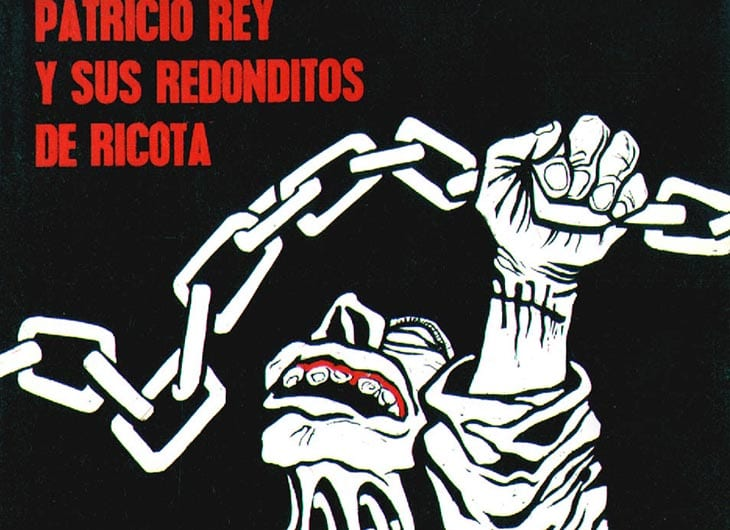
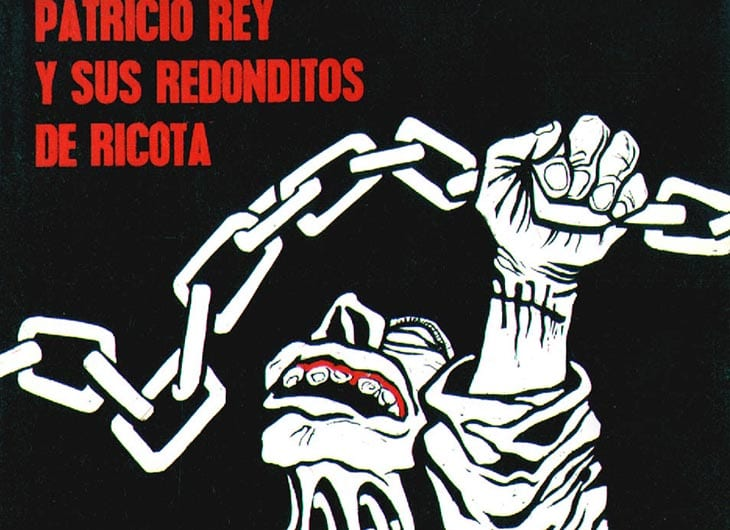

Propósito de la página
A lo largo de mi vida he sido un gran admirador de la música (se podría decir que un melómano), escuchando desde muy pequeño música romántica de la mano de mi padre (un admirador de las baladas en castellano). Desde muy joven sentí atracción hacía otro tipo de música un poco más “pesada”, más concretamente el rock, con bandas clásicas de los años 70 (The Beatles, Creedende Clearwater Revival, The Doors, etc) y otra más cercanas en el tiempo (Nirvana, Oasis, Guns and Roses, etc); todas estas bandas en el plano internacional, pero del plano nacional hubo una banda que sin dudas fue mi favorita de todos los tiempos: Los Redonditos de Ricota. Tal vez la banda más mítica de todo el plano nacional y una de las más grandes del rock en español. El propósito de esta página es ni más ni menos que rendirle tributo a esta mítica agrupación que sin dudas marcó mi adolescencia y la de muchos jóvenes que cada tanto nos reuníamos a disfrutar de las “misas ricoteras” que nos daban en esos recitales multitudinarios y tan especiales que muchos de nosotros aún llevamos guardados en la retina y en lo más profundo de nuestra memoria; como olvidar esos pogos, que según el propio Indio Solari se trataba del “pogo más grande del mundo”, al tocar uno de los temas mas reconocidos del grupo y de la historia del rock nacional como es “Ji ji ji”, tema con el que cerraban la mayoría de sus recitales. En fin, espero que mi trabajo sea del agrado de aquel que visite está página. Redondos por siempre!!!
 
